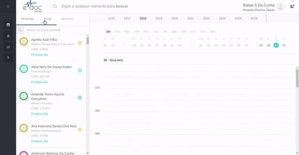

Selecionar local de atendimento
Selecionar local de atendimento
Selecionar local de atendimento será necessário somente se o serviço de emissão e chamador de senhas for contratado
Se não houver o uso do sistema de senha, esses controles NÂO aparecerão e você pode ir para a próxima seção.
Selecionando o local de atendimento
Para selecionar o guichê de atendimento (se for recepcionista) ou o consultório onde o atendimento ocorrerá (se for profissional de saúde), clique na aba "HOJE" e digite o código da localidade onde você está. Se não souber o código da localidade, utilize o menu navegável para encontrar as localidades cadastradas:

- Clique na aba HOJE
- Insira o código da localidade
- Se necessário, anule a seleção e selecione outra localidade com o menu
Possíveis Problemas
- Não sei o código do meu local de atendimento - utilize a busca hierarquica de localidades conforme mostrado do vídeo acima.
- Não encontrei meu local de atendimento no menu - entre em contato com o administrador de sua unidade para que o cadastro de todos os locais de atendimento sejam cadastrados